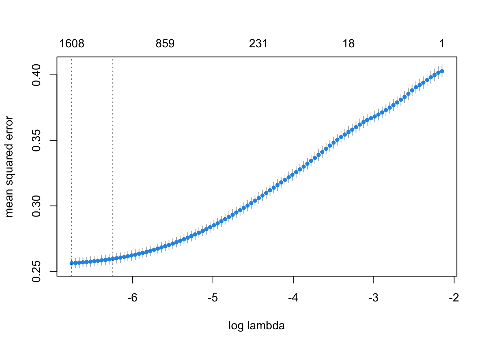
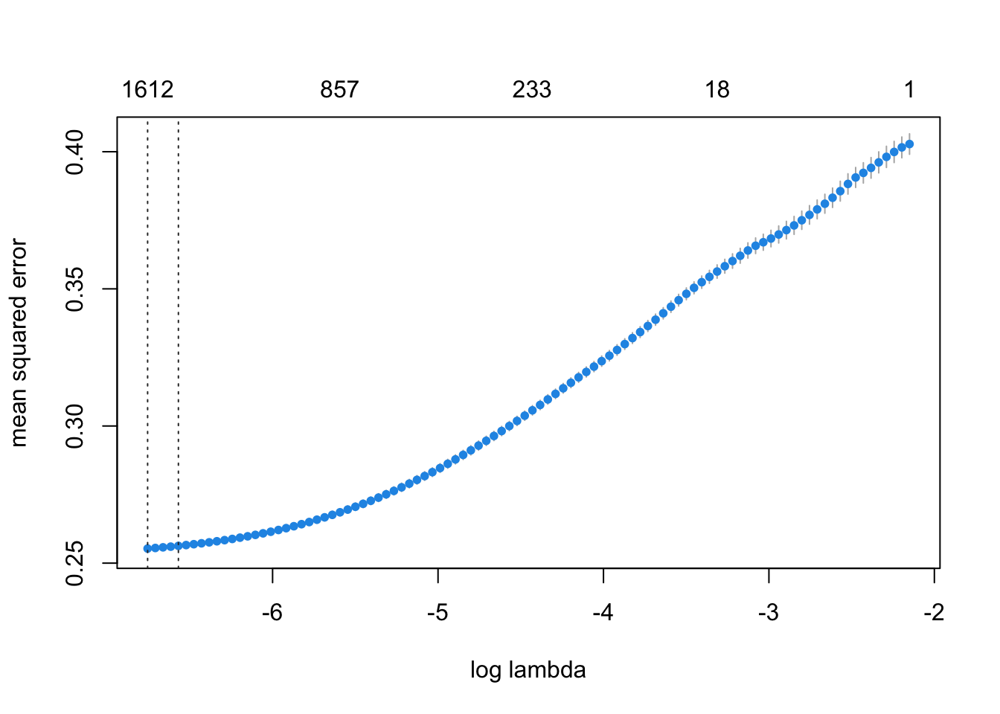
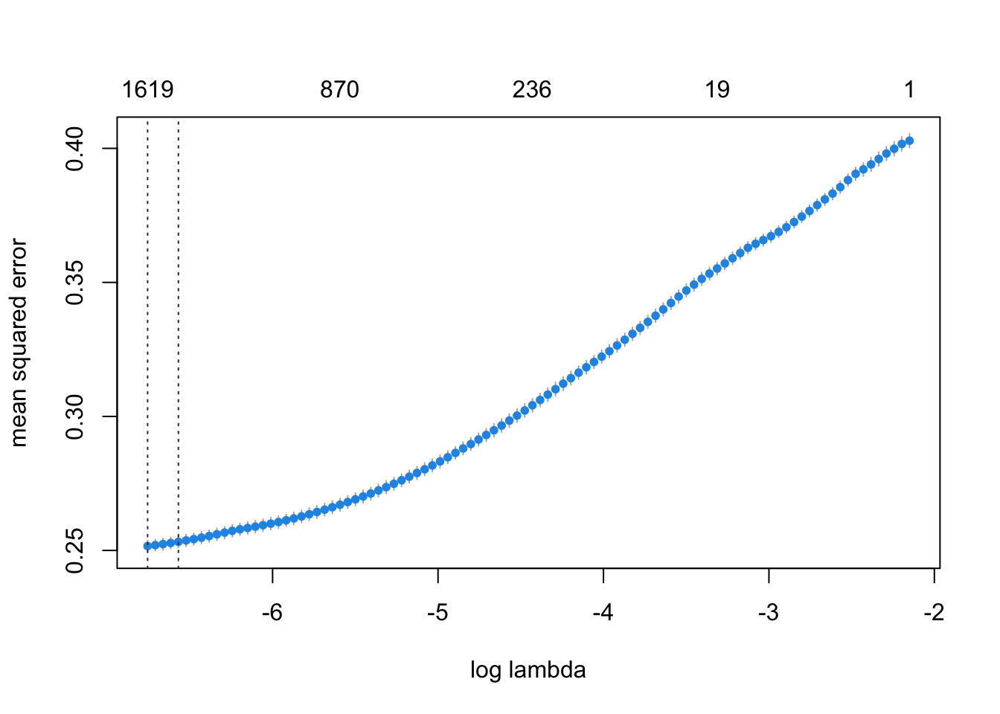
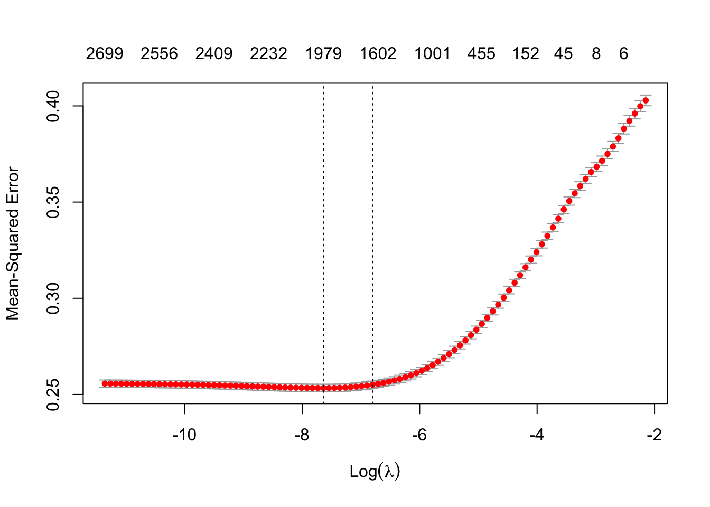
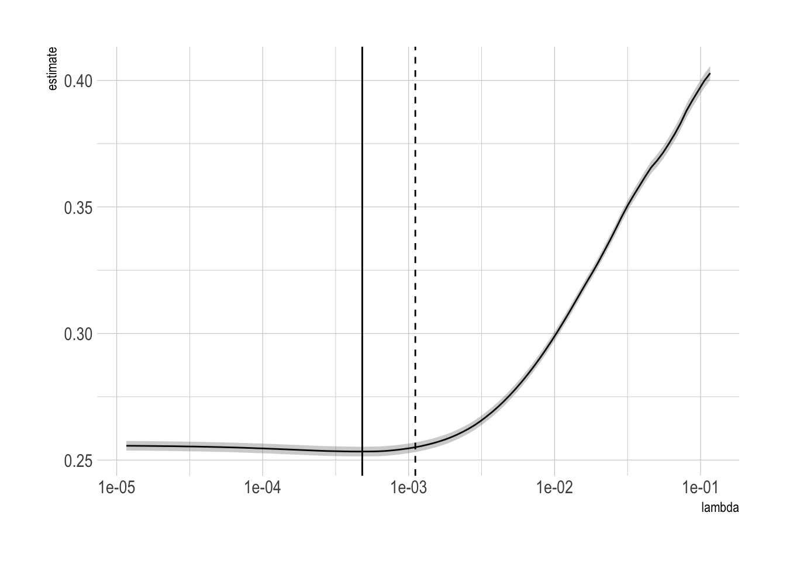
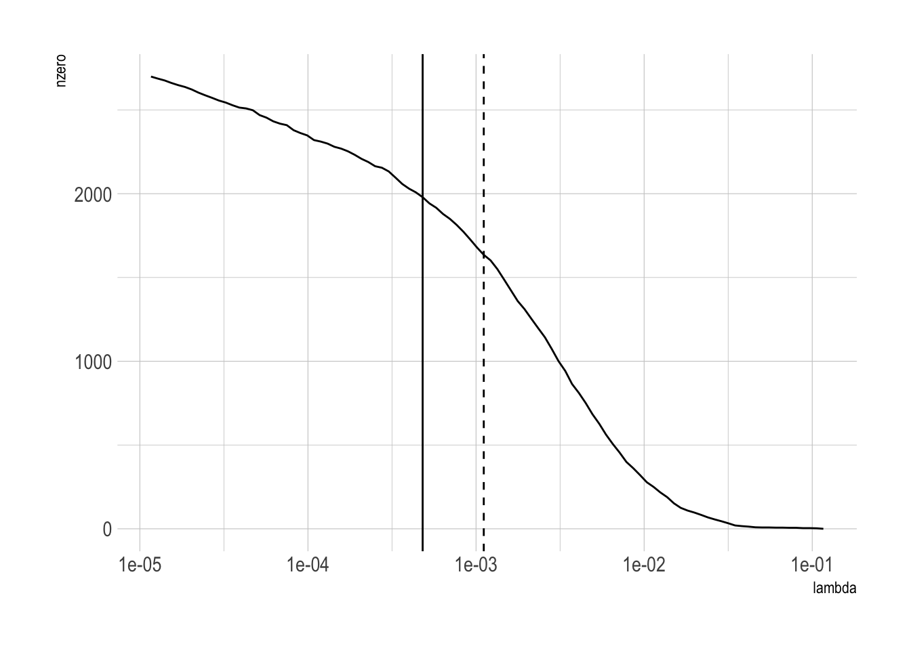
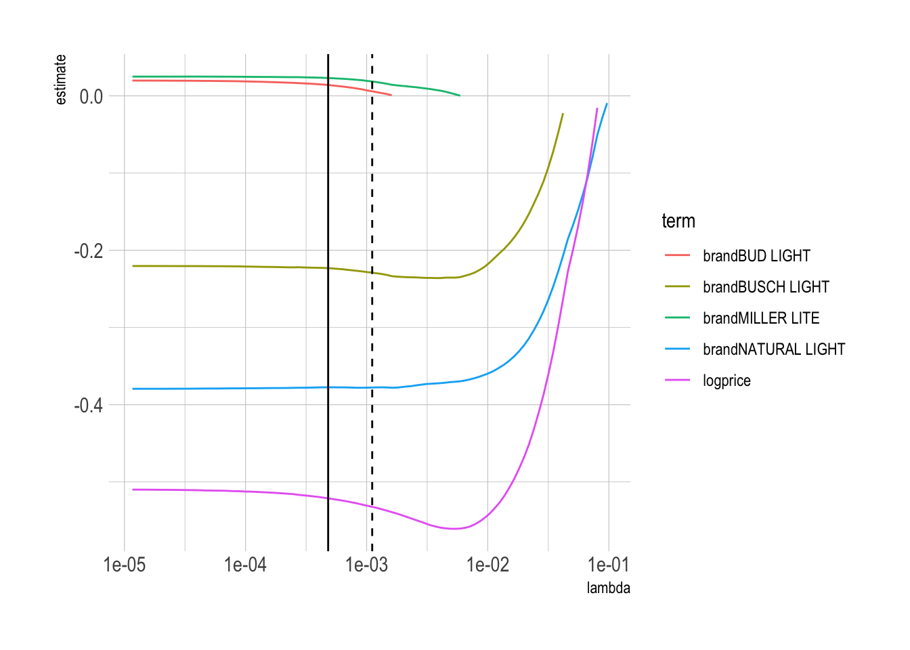
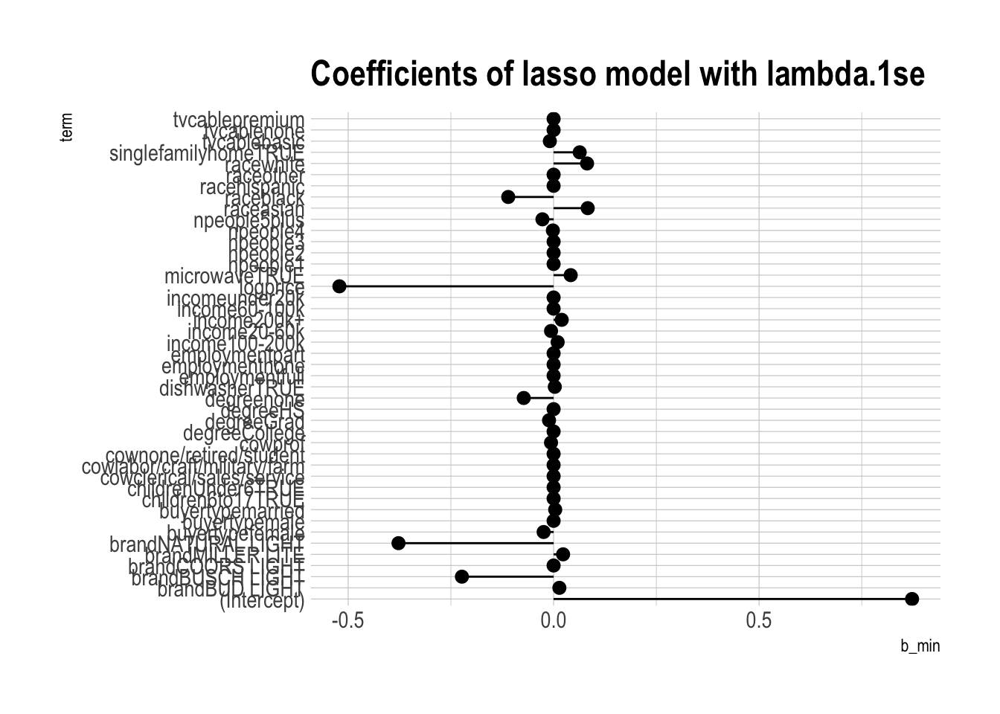

library(tidyverse)
# Importing the beer data
beer_markets <- read.table(
'https://bcdanl.github.io/data/beer_markets.csv',
sep = ',',
header = TRUE,
stringsAsFactor = TRUE
)
# Adding a variable of log price of beer
beer_markets <- beer_markets %>%
mutate(logprice = log(price_per_floz))
################################################################################
# Setting missing value (NA)
# as the reference level of a factor variable
xnaref <- function(x){
if(is.factor(x))
if(!is.na(levels(x)[1]))
x <- factor(x,levels=c(NA,levels(x)),exclude=NULL)
return(x) }
naref <- function(DF){
if(is.null(dim(DF))) return(xnaref(DF))
if(!is.data.frame(DF))
stop("You need to give me a data.frame or a factor")
DF <- lapply(DF, xnaref)
return(as.data.frame(DF))
}
beer_markets_naref <- naref(beer_markets)
# Checking levels of factor variable, brand
levels(beer_markets_naref$brand) [1] NA "BUD LIGHT" "BUSCH LIGHT" "COORS LIGHT"
[5] "MILLER LITE" "NATURAL LIGHT"################################################################################
# Building a sparse matrix for a bigger demographics design
# by interacting with market
# sparse.model.matrix() works with formula, which makes it more convenient
# to construct the matrix of explanatory variables
# than using sparseMatrix(), provided by
# the glmnet package
library(gamlr)
xdemog <- sparse.model.matrix(
~ market * (buyertype + income + childrenUnder6 + children6to17 +
employment + degree + cow + race + microwave +
dishwasher + tvcable + singlefamilyhome + npeople),
data = beer_markets_naref)[,-1] # [,1] to remove the (Intercept) term
xdemog <- xdemog[, colSums(xdemog)>0 ]
# drop columns whose entries are all zeros
xbeer <- sparse.model.matrix(
~ logprice + brand,
data=beer_markets_naref)[,-1]
xbeer_brand_promo <- sparse.model.matrix(
~ logprice * brand * promo,
data=beer_markets_naref)[,-1]
xbeer_brand <- sparse.model.matrix(
~ logprice * brand,
data=beer_markets_naref)[,-1]
ylogspent <- log(beer_markets$dollar_spent)
############################################################################
# linear regression without demographic controls
oned1 <- lm(log(dollar_spent) ~ logprice+brand,
data = beer_markets)
oned2 <- lm(log(dollar_spent) ~ logprice*brand,
data = beer_markets)
oned3 <- lm(log(dollar_spent) ~ logprice*brand*promo,
data = beer_markets)
summary(oned1)
Call:
lm(formula = log(dollar_spent) ~ logprice + brand, data = beer_markets)
Residuals:
Min 1Q Median 3Q Max
-5.4396 -0.2784 0.0861 0.3122 3.0057
Coefficients:
Estimate Std. Error t value Pr(>|t|)
(Intercept) 0.394932 0.030208 13.074 < 2e-16 ***
logprice -0.749760 0.010665 -70.303 < 2e-16 ***
brandBUSCH LIGHT -0.321447 0.008405 -38.244 < 2e-16 ***
brandCOORS LIGHT 0.004218 0.006714 0.628 0.53
brandMILLER LITE -0.024457 0.006204 -3.942 8.09e-05 ***
brandNATURAL LIGHT -0.533787 0.007680 -69.505 < 2e-16 ***
---
Signif. codes: 0 '***' 0.001 '**' 0.01 '*' 0.05 '.' 0.1 ' ' 1
Residual standard error: 0.6056 on 73109 degrees of freedom
Multiple R-squared: 0.09008, Adjusted R-squared: 0.09002
F-statistic: 1448 on 5 and 73109 DF, p-value: < 2.2e-16summary(oned2)
Call:
lm(formula = log(dollar_spent) ~ logprice * brand, data = beer_markets)
Residuals:
Min 1Q Median 3Q Max
-5.7692 -0.2750 0.0835 0.3130 3.0093
Coefficients:
Estimate Std. Error t value Pr(>|t|)
(Intercept) 0.10131 0.05796 1.748 0.08049 .
logprice -0.85440 0.02060 -41.470 < 2e-16 ***
brandBUSCH LIGHT -0.05068 0.11568 -0.438 0.66131
brandCOORS LIGHT 0.28167 0.09141 3.082 0.00206 **
brandMILLER LITE 0.51174 0.08149 6.279 3.42e-10 ***
brandNATURAL LIGHT -0.12315 0.10261 -1.200 0.23008
logprice:brandBUSCH LIGHT 0.09732 0.03805 2.557 0.01055 *
logprice:brandCOORS LIGHT 0.09891 0.03236 3.056 0.00224 **
logprice:brandMILLER LITE 0.19002 0.02878 6.602 4.09e-11 ***
logprice:brandNATURAL LIGHT 0.14187 0.03387 4.188 2.81e-05 ***
---
Signif. codes: 0 '***' 0.001 '**' 0.01 '*' 0.05 '.' 0.1 ' ' 1
Residual standard error: 0.6054 on 73105 degrees of freedom
Multiple R-squared: 0.09065, Adjusted R-squared: 0.09054
F-statistic: 809.8 on 9 and 73105 DF, p-value: < 2.2e-16summary(oned3)
Call:
lm(formula = log(dollar_spent) ~ logprice * brand * promo, data = beer_markets)
Residuals:
Min 1Q Median 3Q Max
-5.2810 -0.2745 0.0752 0.3130 2.7405
Coefficients:
Estimate Std. Error t value Pr(>|t|)
(Intercept) -0.57296 0.06597 -8.686 < 2e-16 ***
logprice -1.08810 0.02362 -46.071 < 2e-16 ***
brandBUSCH LIGHT 0.53428 0.12482 4.280 1.87e-05 ***
brandCOORS LIGHT 0.50335 0.10273 4.900 9.61e-07 ***
brandMILLER LITE 0.45508 0.09388 4.848 1.25e-06 ***
brandNATURAL LIGHT 0.61106 0.11156 5.478 4.33e-08 ***
promoTRUE 3.56730 0.14116 25.271 < 2e-16 ***
logprice:brandBUSCH LIGHT 0.30641 0.04139 7.403 1.34e-13 ***
logprice:brandCOORS LIGHT 0.17584 0.03664 4.800 1.59e-06 ***
logprice:brandMILLER LITE 0.17763 0.03342 5.315 1.07e-07 ***
logprice:brandNATURAL LIGHT 0.39665 0.03715 10.676 < 2e-16 ***
logprice:promoTRUE 1.20854 0.04926 24.533 < 2e-16 ***
brandBUSCH LIGHT:promoTRUE -2.32004 0.34198 -6.784 1.18e-11 ***
brandCOORS LIGHT:promoTRUE -0.79340 0.23171 -3.424 0.000617 ***
brandMILLER LITE:promoTRUE -0.09415 0.19379 -0.486 0.627080
brandNATURAL LIGHT:promoTRUE -3.79341 0.29797 -12.731 < 2e-16 ***
logprice:brandBUSCH LIGHT:promoTRUE -0.84190 0.10961 -7.681 1.60e-14 ***
logprice:brandCOORS LIGHT:promoTRUE -0.27304 0.08031 -3.400 0.000674 ***
logprice:brandMILLER LITE:promoTRUE -0.06428 0.06722 -0.956 0.338999
logprice:brandNATURAL LIGHT:promoTRUE -1.29147 0.09547 -13.527 < 2e-16 ***
---
Signif. codes: 0 '***' 0.001 '**' 0.01 '*' 0.05 '.' 0.1 ' ' 1
Residual standard error: 0.5979 on 73095 degrees of freedom
Multiple R-squared: 0.1133, Adjusted R-squared: 0.1131
F-statistic: 491.5 on 19 and 73095 DF, p-value: < 2.2e-16# the price elasticity of beer from the model, oned1.
coef(oned1)['logprice'] logprice
-0.7497599 # the brand-specific price elasticity of beer from the model, oned2.
coef(oned2)['logprice'] logprice
-0.8543988 coef(oned2)['logprice'] + coef(oned2)['logprice:brandBUSCH LIGHT'] logprice
-0.7570803 coef(oned2)['logprice'] + coef(oned2)['logprice:brandCOORS LIGHT'] logprice
-0.7554864 coef(oned2)['logprice'] + coef(oned2)['logprice:brandMILLER LITE'] logprice
-0.6643792 coef(oned2)['logprice'] + coef(oned2)['logprice:brandNATURAL LIGHT'] logprice
-0.7125328 # the brand-specific price elasticity from the model, oned3 with no promo
coef(oned3)['logprice'] logprice
-1.088099 coef(oned3)['logprice'] + coef(oned3)['logprice:brandBUSCH LIGHT'] logprice
-0.7816927 coef(oned3)['logprice'] + coef(oned3)['logprice:brandCOORS LIGHT'] logprice
-0.9122579 coef(oned3)['logprice'] + coef(oned3)['logprice:brandMILLER LITE'] logprice
-0.910469 coef(oned3)['logprice'] + coef(oned3)['logprice:brandNATURAL LIGHT'] logprice
-0.6914509 # the brand-specific price elasticity from the model, oned3 with promo
coef(oned3)['logprice'] + coef(oned3)['logprice:promoTRUE'] logprice
0.1204374 coef(oned3)['logprice'] + coef(oned3)['logprice:promoTRUE'] +
coef(oned3)['logprice:brandBUSCH LIGHT'] +
coef(oned3)['logprice:brandBUSCH LIGHT:promoTRUE'] logprice
-0.4150559 coef(oned3)['logprice'] + coef(oned3)['logprice:promoTRUE'] +
coef(oned3)['logprice:brandCOORS LIGHT'] +
coef(oned3)['logprice:brandCOORS LIGHT:promoTRUE'] logprice
0.02323496 coef(oned3)['logprice'] + coef(oned3)['logprice:promoTRUE'] +
coef(oned3)['logprice:brandMILLER LITE'] +
coef(oned3)['logprice:brandMILLER LITE:promoTRUE'] logprice
0.2337917 coef(oned3)['logprice'] + coef(oned3)['logprice:promoTRUE'] +
coef(oned3)['logprice:brandNATURAL LIGHT'] +
coef(oned3)['logprice:brandNATURAL LIGHT:promoTRUE'] logprice
-0.7743879 # `oned3` allows for brand-specific price elasticities to vary with promo status.
# Bud, Coors, and Miller have positive price elasticities when doing promo.
# For example, if the stores in
# richer areas raise prices of Bud, Coors, and Miller,
# and people still spend more for Bud, Coors, and Miller?!!
################################################################################
# Gamma Lasso regression with a big demographics design
gamlr_reg1 <- cv.gamlr(cbind(xbeer,xdemog),
ylogspent)
gamlr_reg2 <- cv.gamlr(cbind(xbeer_brand,xdemog),
ylogspent)
gamlr_reg3 <- cv.gamlr(cbind(xbeer_brand_promo,xdemog),
ylogspent)
plot(gamlr_reg1)
plot(gamlr_reg2)
plot(gamlr_reg3)
# the price elasticity of beer from the model gamlr_reg1.
coef(gamlr_reg1)["logprice",][1] -0.5430473coef(oned1)["logprice"] logprice
-0.7497599 # In long regression, consumers are less sensitive to price change.
# there were controls that
# led to lower sales while being simultaneously associated with higher prices.
# the brand-specific price elasticity of beer from the model, gamlr_reg2
coef(gamlr_reg2)["logprice",] +
coef(gamlr_reg2)["logprice:brandBUD LIGHT",][1] -0.5614567coef(oned2)['logprice'] logprice
-0.8543988 coef(gamlr_reg2)["logprice",] +
coef(gamlr_reg2)["logprice:brandBUSCH LIGHT",][1] -0.5411938coef(oned2)['logprice'] + coef(oned2)['logprice:brandBUSCH LIGHT'] logprice
-0.7570803 coef(gamlr_reg2)["logprice",] +
coef(gamlr_reg2)["logprice:brandCOORS LIGHT",][1] -0.5582351coef(oned2)['logprice'] + coef(oned2)['logprice:brandCOORS LIGHT'] logprice
-0.7554864 coef(gamlr_reg2)["logprice",] +
coef(gamlr_reg2)["logprice:brandMILLER LITE",][1] -0.5582351coef(oned2)['logprice'] + coef(oned2)['logprice:brandMILLER LITE'] logprice
-0.6643792 coef(gamlr_reg2)["logprice",] +
coef(gamlr_reg2)["logprice:brandNATURAL LIGHT",][1] -0.4368743coef(oned2)['logprice'] + coef(oned2)['logprice:brandNATURAL LIGHT'] logprice
-0.7125328 # the brand-specific price elasticity from the model, gamlr_reg3
coef(gamlr_reg3)["logprice",] +
coef(gamlr_reg3)["logprice:brandBUD LIGHT",][1] -0.5691356coef(gamlr_reg3)["logprice",] +
coef(gamlr_reg3)["logprice:brandBUD LIGHT",]+
coef(gamlr_reg3)["logprice:brandBUD LIGHT:promoTRUE",][1] -0.5691356coef(gamlr_reg3)["logprice",] +
coef(gamlr_reg3)["logprice:brandBUSCH LIGHT",][1] -0.5223465coef(gamlr_reg3)["logprice",] +
coef(gamlr_reg3)["logprice:brandBUSCH LIGHT",]+
coef(gamlr_reg3)["logprice:brandBUSCH LIGHT:promoTRUE",][1] -0.5223465coef(gamlr_reg3)["logprice",] +
coef(gamlr_reg3)["logprice:brandCOORS LIGHT",][1] -0.5674593coef(gamlr_reg3)["logprice",] +
coef(gamlr_reg3)["logprice:brandCOORS LIGHT",]+
coef(gamlr_reg3)["logprice:brandCOORS LIGHT:promoTRUE",][1] -0.5621279coef(gamlr_reg3)["logprice",] +
coef(gamlr_reg3)["logprice:brandMILLER LITE",][1] -0.5674593coef(gamlr_reg3)["logprice",] +
coef(gamlr_reg3)["logprice:brandMILLER LITE",]+
coef(gamlr_reg3)["logprice:brandMILLER LITE:promoTRUE",][1] -0.5674593coef(gamlr_reg3)["logprice",] +
coef(gamlr_reg3)["logprice:brandNATURAL LIGHT",][1] -0.4487392coef(gamlr_reg3)["logprice",] +
coef(gamlr_reg3)["logprice:brandNATURAL LIGHT",]+
coef(gamlr_reg3)["logprice:brandNATURAL LIGHT:promoTRUE",][1] -0.4487392# `gamlr_reg3` has no positive price elasticities, while `oned3` has some
# positive price elasticities.
################################################################################
# Lasso regression.
library(glmnet)
# The matrices used in cv.gamlr() can be used in cv.glmnet().
glmnet_reg1 <- cv.glmnet(cbind(xbeer,xdemog),
ylogspent, alpha = 1)
glmnet_reg2 <- cv.glmnet(cbind(xbeer_brand,xdemog),
ylogspent, alpha = 1)
glmnet_reg3 <- cv.glmnet(cbind(xbeer_brand_promo,xdemog),
ylogspent, alpha = 1)
plot(glmnet_reg1)
plot(glmnet_reg2)plot(glmnet_reg3)# broom package works with glmnet() but not with gamlr().
library(broom)
sum_glmnet_reg1 <- tidy(glmnet_reg1)
sum_glmnet_reg2 <- tidy(glmnet_reg2)
sum_glmnet_reg3 <- tidy(glmnet_reg3)
lambda_glmnet_reg1 <- glance(glmnet_reg1)
lambda_glmnet_reg2 <- glance(glmnet_reg2)
lambda_glmnet_reg3 <- glance(glmnet_reg3)
# plot of CV errors as a function of lambda
ggplot(sum_glmnet_reg1, aes(lambda, estimate)) +
geom_line() +
geom_ribbon(aes(ymin = conf.low,
ymax = conf.high), alpha = .25) +
geom_vline(xintercept = lambda_glmnet_reg1$lambda.min) +
geom_vline(xintercept = lambda_glmnet_reg1$lambda.1se, lty = 2) +
scale_x_log10()
# plot of number of nonzero betas for each choice of lambda
ggplot(sum_glmnet_reg1, aes(lambda, nzero)) +
geom_line() +
geom_vline(xintercept = lambda_glmnet_reg1$lambda.min) +
geom_vline(xintercept = lambda_glmnet_reg1$lambda.1se, lty = 2) +
scale_x_log10()
# coefficient plot as a function of lambda
tidied <- tidy(glmnet_reg1$glmnet.fit)
tidied <- filter(tidied,
str_detect(term, "brand") == T |
str_detect(term, "logprice") == T)
ggplot(tidied,
aes(lambda, estimate, color = term)) +
scale_x_log10() +
geom_line() +
geom_vline(xintercept = lambda_glmnet_reg1$lambda.min) +
geom_vline(xintercept = lambda_glmnet_reg1$lambda.1se, lty = 2)
# saving beta estimates from both 1se and min lambdas
beta1se <- coef(glmnet_reg1) ## 1se cv selection
beta1se <- as.data.frame(as.matrix(beta1se))
beta1se <- rename(beta1se, b_1se = s1)
betamin <- coef(glmnet_reg1,
s = glmnet_reg1$lambda.min) ## min cv `s`election
betamin <- as.data.frame(as.matrix(betamin))
betamin <- rename(betamin, b_min = s1)
betas <- cbind(betamin, beta1se)
betas$term <- rownames(betas)
rownames(betas) <- NULL
betas <- betas %>%
select(term, b_min, b_1se)
# visualizing beta estimates
ggplot(data = filter(betas, # drop obs. w/ market* terms
str_detect(term, "market") == F),
aes(x = term, y = b_min)) +
geom_pointrange(aes(ymin = 0, ymax = b_min)) +
ggtitle("Coefficients of lasso model with lambda.1se") +
coord_flip()
ggplot(data = filter(betas, # drop obs. w/ market* terms
str_detect(term, "market") == F),
aes(x = term, y = b_min)) +
geom_pointrange(aes(ymin = 0, ymax = b_1se)) +
ggtitle("Coefficients of lasso model with lambda.1se") +
coord_flip()